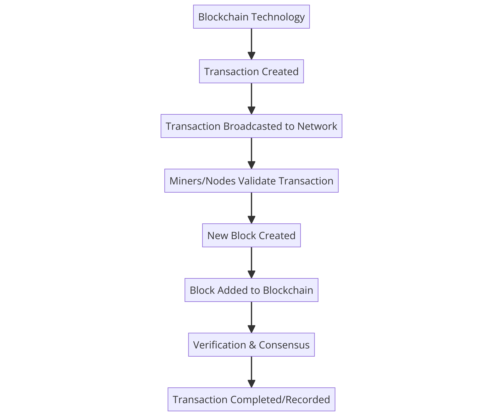
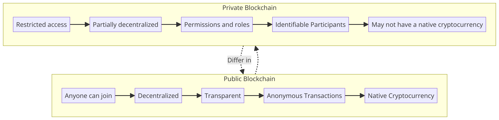

Understanding Blockchain: A Simple Guide
A blockchain is like a digital notebook that everyone can see, but no one can erase or change what's already written. Imagine you and your friends keep notes of who owes whom money. Instead of using paper, you decide to write it down on a shared online document that updates in real-time for everyone. This is similar to how blockchain works, but it's for the whole world, not just a group of friends.
How Does Blockchain Work?
1. Blocks: Each page in this digital notebook is called a "block". Each block contains a list of transactions, like sending money, buying things, etc.
2. Chain: When a page is full, it's added to a stack of previous pages, creating a chain. Hence, "blockchain".
3. Security: Every block is given a unique code (like a fingerprint), and each new block contains its own code plus the code of the previous block. This links them securely and makes it super hard to change anything without being noticed.
4. Network: The blockchain is copied across thousands of computers worldwide. These computers, called nodes, work together to check and record new transactions. This means there's no single point of failure, and hacking the blockchain is extremely difficult.
Why Is Blockchain Important?
Blockchain technology offers a secure and transparent way to record transactions without needing a central authority, like a bank. This can make transactions faster, cheaper, and more reliable. It's not just about money, though. Blockchain can track the movement of goods, property titles, votes in an election, and more, making it a versatile tool for various applications.
Real-World Uses of Blockchain
- Cryptocurrency: Bitcoin and other digital currencies use blockchain to track who owns what without a central bank.
- Supply Chain Management: Companies can use blockchain to record the production, shipment, and receipt of products, making the process more transparent.
- Voting Systems: Some countries are experimenting with blockchain to create secure and tamper-proof voting systems.
- Legal Documents: Property deeds and personal documents can be stored on a blockchain, reducing fraud and lost documents.
Challenges and Future of Blockchain
While blockchain has many benefits, it's not perfect. Issues like energy consumption, privacy, and regulatory challenges need to be addressed. However, as technology evolves, so do the solutions to these problems. The future of blockchain looks promising, with potential applications in almost every sector imaginable.
What is Decentralization?

In simple terms, decentralization refers to the process of distributing and dispersing power, control, or decision-making authority away from a central authority. Imagine a scenario where, instead of one person making all the decisions in a group, every person has an equal say in the decision-making process. This is the essence of decentralization.
Layman's Explanation
Think of decentralization like organizing a potluck dinner versus a restaurant meal. In a restaurant, the chef decides the menu, and you must choose from what’s offered. In a potluck, everyone brings a dish to share, and there’s no single person in charge. Decentralization, in various contexts like politics, economics, or technology, aims to replicate the potluck model. It distributes control, reducing the concentration of power in the hands of a few.
Technical Overview
Technically, decentralization is often associated with blockchain and distributed ledger technologies (DLT). These technologies enable a network of computers (nodes) to agree on updates to a shared ledger (a database of transactions) without needing a central authority. This agreement is achieved through consensus mechanisms, such as Proof of Work (PoW) or Proof of Stake (PoS).
Blockchain and Decentralization
Blockchain technology is a prime example of decentralization in action. Originally devised for cryptocurrencies like Bitcoin, it has found applications across various industries. A blockchain is essentially a chain of blocks, each containing transaction data. This data is verified and agreed upon by consensus among participants in the network, making it immutable and resistant to fraud.
Benefits of Decentralization
- Security: By distributing data across a network rather than storing it in a single location, decentralization makes it harder for hackers to compromise the information.
- Transparency: Decentralized networks are typically open source and auditable by anyone, promoting transparency.
- Resilience: Decentralized systems are less likely to face downtime since there is no single point of failure.
- Empowerment: Decentralization can give more control to individuals, reducing the influence of central authorities.
Challenges of Decentralization
While decentralization offers many benefits, it also comes with challenges. These include the complexity of achieving consensus, potential scalability issues, and the energy consumption associated with certain consensus mechanisms like PoW.
Real-world Applications
Decentralization is not just theoretical; it has practical applications. For instance, decentralized finance (DeFi) platforms allow financial transactions without traditional banks. Decentralized autonomous organizations (DAOs) enable collective decision-making without a hierarchical management structure.
Understanding Blockchain Technology
Blockchain is a decentralized ledger that records all transactions across a network. It's the backbone of cryptocurrencies like Bitcoin and Ethereum, enabling secure and transparent transactions without the need for a central authority.
Key Components of Blockchain
- Block: Contains a list of transactions. Each block is connected to the previous one, creating a chain.
- Transactions: The actions carried out between parties, such as sending cryptocurrency, that are recorded in blocks.
- Node: Any device that participates in the blockchain network, maintaining a copy of the ledger and, in some cases, validating transactions.
How It Works
- Transactions are verified by network nodes through cryptography and recorded in a block.
- Each new block is linked to the previous block, forming a chain of blocks with a unique history that cannot be altered without redoing the entire chain.
- This linkage ensures the integrity of the transaction history, making the blockchain secure and tamper-proof.
Blockchain Diagram
The diagram below illustrates the basic structure of a blockchain:
Benefits of Blockchain Technology
- Decentralization: There is no central point of control, making the system more resilient to cyberattacks and fraud.
- Transparency: Every participant can view the transactions stored in the blockchain, ensuring transparency.
- Security: Transactions are encrypted and linked to the previous transaction, making it extremely secure.
Conclusion
Blockchain technology offers a revolutionary approach to secure and transparent transaction processing in a decentralized manner. Its application goes beyond cryptocurrencies, impacting various industries such as finance, supply chain, and healthcare.
Understanding Consensus Mechanisms
Consensus mechanisms are foundational technologies that enable distributed networks to agree on the validity of transactions, ensuring integrity and security without the need for a central authority. These mechanisms are crucial for the operation of blockchain networks, supporting cryptocurrencies and decentralized applications (dApps).
Types of Consensus Mechanisms
Several consensus mechanisms exist, each with its unique attributes and use cases. The most prominent ones include:
- Proof of Work (PoW): This is the original consensus mechanism used by Bitcoin. It requires miners to solve complex mathematical puzzles to validate transactions and create new blocks. Although secure, it is criticized for its high energy consumption.
- Proof of Stake (PoS): PoS selects validators in proportion to their quantity of held tokens. It is more energy-efficient than PoW and is used by networks like Ethereum 2.0.
- Delegated Proof of Stake (DPoS): An evolution of PoS, DPoS allows token holders to vote for a limited number of delegates who will secure the network. It offers high transaction speeds and reduced energy consumption.
- Byzantine Fault Tolerance (BFT): This mechanism enables a blockchain network to reach consensus even if some nodes fail or act maliciously. Variants like Practical Byzantine Fault Tolerance (PBFT) are used in many enterprise solutions.
Proof of Work (PoW)
Used by Bitcoin and other early cryptocurrencies, PoW requires miners to solve complex mathematical puzzles to validate transactions and create new blocks. This process, known as mining, consumes significant computational resources and energy but offers strong security guarantees.
Proof of Stake (PoS)
As an energy-efficient alternative to PoW, PoS allows validators to participate in transaction validation and block creation based on the amount of cryptocurrency they hold and are willing to "stake" as collateral. This method encourages participation while reducing energy consumption.
Delegated Proof of Stake (DPoS)
DPoS enhances PoS by allowing stakeholders to vote for a limited number of delegates who will validate transactions and create blocks. This system can achieve faster transaction speeds and increased scalability.
Proof of Authority (PoA)
In PoA networks, transaction validation is performed by approved accounts, known as validators. PoA is known for its efficiency and speed, making it suitable for private blockchains or networks requiring permissioned participation.
Proof of Space and Time (PoST)
PoST allows network participants to utilize disk space to validate transactions and create blocks. This mechanism is seen as an eco-friendly alternative to PoW, as it requires less energy consumption.
Choosing the Right Consensus Mechanism
Choosing the right consensus mechanism depends on the specific needs of the blockchain project, including security, speed, decentralization, and energy efficiency. Each mechanism has its trade-offs, and the choice significantly impacts the network's functionality and potential applications.
Future Directions
The development of consensus mechanisms is an ongoing area of research and innovation. Emerging mechanisms aim to address the limitations of current systems, offering improvements in scalability, security, and sustainability. The continuous evolution of these technologies is vital for the broader adoption and success of blockchain networks.
Public vs. Private Blockchains
Blockchains are classified into public and private based on their access permissions and network participation. Here's how they compare:
Public Blockchains
Public blockchains are decentralized networks open to anyone. They offer transparency, immutability, and are secured through consensus mechanisms like Proof of Work (PoW) or Proof of Stake (PoS). Examples include Bitcoin and Ethereum. These blockchains are ideal for scenarios requiring trustless environments and full transparency.
Private Blockchains
Private blockchains are permissioned networks where access is controlled by an organization or consortium. They offer higher speed and scalability, as well as privacy for transactions. Participants are vetted before joining, making these blockchains suitable for business and enterprise use where network integrity and privacy are paramount.
Key Differences
- Access: Public blockchains allow any user to join, while private blockchains restrict access to only authorized participants.
- Control: Private blockchains are governed by selected entities, whereas public blockchains are decentralized and lack a central authority.
- Transparency: Public blockchains provide complete transparency of transactions to all participants. Private blockchains restrict this information to a certain group.
- Efficiency: Private blockchains can process transactions more quickly due to their smaller size and controlled access.
the choice between a public and private blockchain depends on the specific needs and goals of a project, including considerations of transparency, security, scalability, and control.
History of Blockchain Technology
Blockchain technology has revolutionized the way we perceive data security and transparency since its inception. Below is a brief overview of its evolution:
- 1991: Stuart Haber and W. Scott Stornetta introduced a computationally practical solution for time-stamping digital documents so that they cannot be backdated or tampered with.
- 2008: A person or group under the pseudonym Satoshi Nakamoto published the Bitcoin whitepaper, describing a decentralized, peer-to-peer electronic cash system - introducing the first blockchain.
- 2009: Nakamoto implemented the first blockchain as the public ledger for transactions made using Bitcoin, marking the start of blockchain technology's use in cryptocurrency.
- 2013: Vitalik Buterin proposed Ethereum, introducing the concept of a blockchain that can execute smart contracts, which are programmable contracts that automatically execute when predetermined conditions are met.
- 2015: The launch of Ethereum marked the beginning of the second-generation blockchain, expanding the technology's applications beyond cryptocurrencies to include a wide range of decentralized applications (dApps).
- 2017: The term "Initial Coin Offering" (ICO) gained popularity as startups began raising money by issuing their own tokens on a blockchain, predominantly Ethereum. This year also saw the cryptocurrency market reach unprecedented heights.
- 2018: Interest in blockchain technology spread beyond cryptocurrencies, with industries exploring its potential for improving transparency, security, and efficiency in various applications such as supply chain management, healthcare, and finance.
- 2020: The advent of decentralized finance (DeFi) applications on blockchain platforms, particularly Ethereum, challenged traditional financial services by offering decentralized lending, borrowing, and trading.
- 2021: Non-fungible tokens (NFTs) exploded in popularity, demonstrating blockchain's capability to provide proof of ownership and provenance for digital and physical assets beyond currency.
- 2023 and beyond: Blockchain technology continues to evolve, with advancements in scalability, interoperability, and sustainability. The focus is also shifting towards the integration of blockchain with other emerging technologies like AI and IoT, promising to unlock new applications and efficiencies.
Smart Contracts Introduction
Smart contracts are self-executing contracts with the terms of the agreement directly written into lines of code. They run on blockchain networks and automatically execute when predetermined conditions are met, without the need for intermediaries.
Writing a Solidity Contract
Solidity is the most popular language for writing smart contracts on Ethereum. Below is a simple Solidity smart contract example:
// SPDX-License-Identifier: MIT
pragma solidity ^0.8.0;
contract SimpleStorage {
uint storedData;
function set(uint x) public {
storedData = x;
}
function get() public view returns (uint) {
return storedData;
}
}
Deploying with Remix IDE
Remix IDE is a powerful open source tool that helps you write Solidity contracts straight from the browser. To deploy the above contract:
- Copy the contract code into a new file in Remix IDE.
- Compile the contract using the Solidity compiler provided in Remix.
- Deploy the contract on a test network using the "Deploy" button.
Blockchain and Smart Contract Security
Blockchain technology has revolutionized how we perceive trust and security in the digital age. At its core, blockchain offers a decentralized platform where data is immutable, transparent, and securely distributed across multiple nodes. This intrinsic design makes it exceptionally resistant to tampering and fraud, setting a new standard for data integrity and security in various applications, from cryptocurrencies like Bitcoin and Ethereum to supply chain management and beyond.
Smart contracts, self-executing contracts with the terms of the agreement directly written into code, further extend the utility of blockchains. They operate on blockchain networks, inheriting the technology's security features while enabling automatic, trustless transactions without the need for intermediaries. However, the security of smart contracts is paramount, as their code governs the execution of contractual clauses and the movement of blockchain assets.
Challenges in Blockchain and Smart Contract Security
Despite the robust security features of blockchain, vulnerabilities can still arise from software bugs, improper implementation, and sophisticated cyber-attacks. Smart contracts are particularly susceptible to risks if their code contains flaws or loopholes. Such vulnerabilities can lead to significant financial losses, as seen in various high-profile cases where millions of dollars in digital assets were compromised.
To mitigate these risks, thorough security audits and rigorous testing of smart contracts are essential before deployment. Developers must employ best practices in coding, adhere to security protocols, and stay informed about emerging threats. Additionally, the development of new tools and methodologies for smart contract verification and formal verification techniques are critical in ensuring the integrity and security of blockchain applications.
Best Practices for Ensuring Security
- Code Auditing: Conduct comprehensive audits of smart contract code by experienced security professionals to identify and rectify vulnerabilities.
- Security Patterns: Utilize established security patterns and frameworks that have been proven to mitigate risks in blockchain and smart contract development.
- Continuous Monitoring: Implement monitoring tools to detect suspicious activities and potential security breaches in real-time.
- Education and Awareness: Foster a culture of security awareness among developers and users to recognize and defend against phishing attacks and other cyber threats.
while blockchain and smart contracts offer revolutionary potential for secure, autonomous transactions, their security must not be taken for granted. By acknowledging the unique challenges they present and adhering to stringent security measures, we can harness the full potential of these technologies safely and effectively.
Understanding NFTs and Fungible Tokens
Non-fungible tokens (NFTs) and fungible tokens are two primary types of digital assets in the blockchain ecosystem. While both exist on blockchain networks, they serve different purposes and have unique characteristics.
What are NFTs?
NFTs, or Non-Fungible Tokens, represent ownership or proof of authenticity of a unique item or piece of content, using blockchain technology. Unlike cryptocurrencies like Bitcoin or traditional money, which are fungible, meaning each unit is the same as every other unit, NFTs are unique and cannot be exchanged on a one-to-one basis with another NFT.
Examples of NFTs
- Digital Art: Artists can sell their work as NFTs, providing a new way to monetize digital art. For example, Beeple's artwork "Everydays: The First 5000 Days" sold for over $69 million.
- Collectibles: Digital collectibles, such as NBA Top Shot cards, offer fans a new way to own exclusive sports highlights.
- Virtual Real Estate: Platforms like Decentraland allow users to buy, sell, and build on virtual land, which is tokenized as NFTs.
- Music: Musicians can tokenize their songs or albums as NFTs, providing a new form of distribution and ownership.
What are Fungible Tokens?
Fungible tokens are digital assets that are identical to each other and can be exchanged on a one-to-one basis. The most common examples are cryptocurrencies like Bitcoin and Ethereum. These tokens are used for transactions, investments, and as a store of value.
Examples of Fungible Tokens
- Bitcoin (BTC): The first and most well-known cryptocurrency, used for transactions and as a store of value.
- Ethereum (ETH): Not just a cryptocurrency, but also a platform for creating decentralized applications (dApps) and smart contracts.
- USD Coin (USDC): A stablecoin pegged to the US dollar, aiming to combine the stability of a fiat currency with the flexibility of a cryptocurrency.
Comparing NFTs and Fungible Tokens
| Aspect | NFT | Fungible Token |
|---|---|---|
| Uniqueness | Each token is unique and non-interchangeable. | All tokens are identical and interchangeable. |
| Use Cases | Art, collectibles, real estate, identity verification. | Transactions, investments, store of value. |
| Examples | Beeple's art, NBA Top Shot, Decentraland. | Bitcoin, Ethereum, USD Coin. |
Both NFTs and fungible tokens have revolutionized how we think about ownership, value, and the exchange of assets in the digital age. While NFTs offer a way to own unique digital items, fungible tokens provide a means for seamless transactions and investments on the blockchain.
Introduction to Decentralized Applications (DApps)
Decentralized Applications, or DApps, are a novel form of software application that operate on a blockchain or peer-to-peer network of computers, instead of a single computer. Unlike traditional applications, which are controlled by a single entity, DApps are governed by a community of users, ensuring transparency, security, and resistance to censorship.
How Do DApps Work?
DApps run on a blockchain network which is essentially a distributed ledger that records all transactions across a network of computers. This ensures that the application operates in a decentralized manner, giving users control and ownership of their data and transactions.
Benefits of DApps
- Transparency: With DApps, every transaction and its associated value are visible to anyone who has access to the blockchain, ensuring transparency and trust.
- Security: Due to the decentralized nature and cryptographic security of blockchains, DApps are less vulnerable to hacks and fraudulent activities.
- No Downtime: As they are hosted on multiple computers across the globe, DApps do not have a single point of failure and are less likely to go down.
- Privacy: DApps provide users with more control over their personal information compared to traditional applications, where companies might collect and sell user data.
Examples of DApps
There are numerous DApps serving various industries, including finance (DeFi), gaming, social media, and more. Some popular examples include Uniswap (a decentralized exchange), CryptoKitties (a blockchain-based virtual game), and Steemit (a blockchain-based blogging and social media platform).
Future of DApps
As blockchain technology continues to evolve, the potential for DApps is immense. They offer a promising alternative to the centralized digital ecosystem, with the benefits of enhanced security, privacy, and user autonomy. The growing interest in blockchain and the increasing adoption of cryptocurrencies are likely to fuel the development and mainstream acceptance of DApps in the coming years.
Understanding Decentralized Identity: An In-Depth Exploration
Decentralized identity marks a paradigm shift in digital identification by embracing a model that prioritizes user autonomy and privacy above traditional, centralized control mechanisms. This innovative approach disrupts conventional identity systems, transferring power and control from central authorities to individual users. By utilizing cutting-edge blockchain technology, decentralized identity systems provide a robust, tamper-proof infrastructure for managing digital identities, ensuring enhanced security, privacy, and interoperability.
The Cornerstones of Decentralized Identity
At the heart of decentralized identity are several foundational principles and technologies that collectively redefine how identities are created, managed, and utilized in the digital realm:
- Self-Sovereignty: Users gain unparalleled control over their identity, possessing the ability to manage and share their personal data at their discretion, without the need for intermediary validation or storage.
- Privacy by Design: Decentralized identity systems are architected with privacy as a core tenet, allowing individuals to selectively disclose information and engage in transactions without compromising their anonymity or personal security.
- Interoperability: A unified, standards-based approach ensures that decentralized identities can be seamlessly utilized across a wide array of platforms, services, and geographical boundaries, fostering a truly global identity network.
- Security and Immutability: Leveraging blockchain technology, decentralized identities are safeguarded against unauthorized access and alterations, providing a secure ledger of transactions and consents.
Technological Underpinnings and Real-World Applications
Implementing decentralized identity solutions involves sophisticated technologies and frameworks, including blockchain, cryptographic algorithms, and decentralized identity standards like the Decentralized Identifiers (DIDs) specification. These technologies facilitate the creation of digital wallets, enabling users to store and manage their identity credentials securely.
Real-world applications of decentralized identity are vast and varied, encompassing sectors such as finance, healthcare, education, and e-commerce. For instance, in finance, decentralized identity can significantly reduce fraud and streamline Know Your Customer (KYC) processes. In healthcare, it offers the potential for secure and patient-controlled medical records.
Challenges and the Path Forward
While the promise of decentralized identity is vast, its adoption faces several hurdles, including technological complexity, scalability concerns, and the need for widespread recognition and regulatory acceptance. Additionally, the user experience must be intuitive and accessible to encourage mainstream adoption.
Despite these challenges, the future of decentralized identity is bright, with ongoing advancements in blockchain technology, increasing awareness of privacy issues, and collaborative efforts across industries to establish interoperable standards. As we move forward, decentralized identity stands to fundamentally transform our digital interactions, ushering in a new era of privacy, security, and user empowerment.